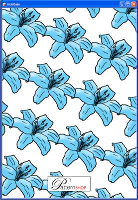
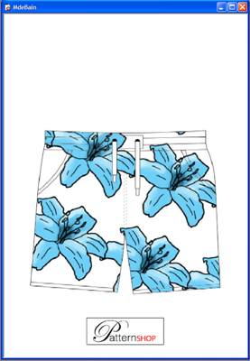
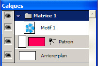
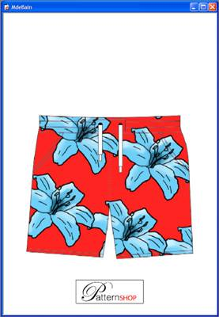

Grâce aux patrons Patternshop vous donne un aperçu précis de votre travail appliqué sur différents supports et vous permet d’ajuster au mieux la taille du réseau.
Une dizaine de patrons sont fournis avec Patternshop.
Pour créer un patron, voir le tutorial : Créer un patron.
Créez un réseau avec le ou les motifs de votre choix.

Dans le menu Fichier > Importer un patron… importez votre patron dans Patternshop.
Attention, vous ne pouvez avoir qu’un patron par document. Si vous en avez déjà importé un, il sera remplacé.

Le patron importé apparaît dans la fenêtre des calques.

Comme pour le calque Arrière-plan, vous pouvez en cliquant sur la zone rectangulaire du calque, ouvrir le Sélecteur de couleur pour définir une couleur de fond sur votre patron.
